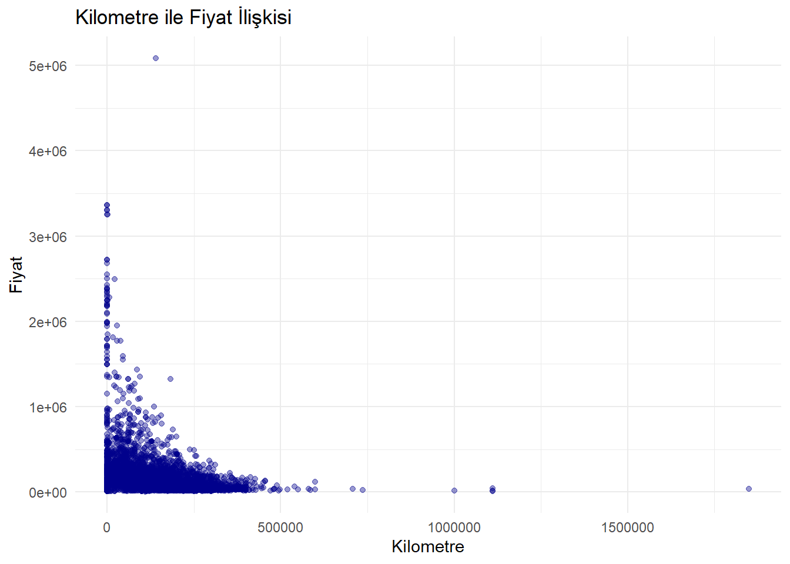

Bu proje, Türkiye ikinci el otomobil piyasasında yer alan araçlara ait verilerin analizini kapsamaktadır. Kullanılan veri kümesi, Kaggle üzerinden edinilmiş ve 2020 yılı itibarıyla Türkiye’deki araç ilanlarını içermektedir. Projede araçların fiyatları, kilometreleri, yaşları, vites tipleri ve markaları gibi özellikler dikkate alınarak çeşitli istatistiksel ve görsel analizler gerçekleştirilmiştir.
Veri setinde aşağıdaki temel değişkenler bulunmaktadır:
Marka
Arac.Tip.Grubu
Model.Yıl
Km
Fiyat
Vites
Toplamda binlerce ilan yer almakta olup, hem popüler hem de nadir araç markaları dahil edilmiştir.
2.3 Tercih Sebebi
Bu veri seti, geniş marka-model çeşitliliği, farklı vites türleri ve yıllara göre fiyat değişimleri gibi çok yönlü analizler yapmaya uygun olduğundan tercih edilmiştir. Ayrıca ikinci el piyasasının fiyat trendlerini anlamak için zengin bir örneklem sunmaktadır.
2.4 Ön İşleme
Veri setindeki eksik ve uç (outlier) değerler incelenmiş, bazı analizlerde yalnızca belirli marka ya da model grupları filtrelenmiştir. Ayrıca yaş değişkeni hesaplanarak araçlar yaş gruplarına ayrılmıştır. Bazı grafiklerde fiyatlar logaritmik ya da ortalama üzerinden analiz edilmiştir.
3 Analiz
3.1 Keşifsel Veri Analizi
Marka ve araç tip gruplarının göre en pahalı araç analizi., renkli scatter grafiklerle gösterilmiş ve ayrım kolaylaştırılmıştır.
library(dplyr)
Attaching package: 'dplyr'
The following objects are masked from 'package:stats':
filter, lag
The following objects are masked from 'package:base':
intersect, setdiff, setequal, union
Kilometre-Fiyat ilişkisi incelendiğinde, düşük kilometreli araçların daha pahalı olduğu, yüksek kilometreli araçlarda fiyatların düştüğü gözlemlenmiştir.
ggplot(turkey_car_market, aes(x = Km, y = Fiyat)) +geom_point(alpha =0.4, color ="darkblue") +labs(title ="Kilometre ile Fiyat İlişkisi",x ="Kilometre", y ="Fiyat") +theme_minimal()
names(turkey_car_market)[names(turkey_car_market) =="Model Yıl"] <-"Model_Yil"ggplot(turkey_car_market, aes(x =as.factor(Model_Yil), y = Fiyat)) +geom_boxplot(fill ="orange") +labs(title ="Model Yılına Göre Fiyat Dağılımı",x ="Model Yılı", y ="Fiyat") +theme(axis.text.x =element_text(angle =90)) +theme_minimal()

names(turkey_car_market)[names(turkey_car_market) =="Model Yıl"] <-"Model_Yil"ggplot(turkey_car_market %>%filter(Model_Yil >=2010, Fiyat <1000000),aes(x =as.factor(Model_Yil), y = Fiyat)) +geom_boxplot(fill ="steelblue") +labs(title ="2010 ve Sonrası Model Yıllarına Göre Fiyat Dağılımı (1M TL Altı)",x ="Model Yılı", y ="Fiyat (TL)") +theme(axis.text.x =element_text(angle =45, hjust =1)) +theme_minimal()
**Bu görsel, kilometre ile araç fiyatı arasındaki ilişkiyi gösteren bir scatter grafiktir. Amaç, araçların kullanım miktarı (km) arttıkça fiyatlarının nasıl değiştiğini gözlemlemektir. Grafikte yoğun şekilde sol alt köşede toplanma görülür; bu da düşük kilometreli araçların daha pahalı olduğunu, kilometre arttıkça fiyatın belirgin şekilde düştüğünü gösterir. Outliers value olması bu grafiğin x eksenindeki genişliğe sebep olmuştur ve bu da veri setinde birkaç istisnai kayıt olduğunu düşündürür.
Araç yaşı ve fiyat ilişkisi, negatif yönlü bir eğilim göstermekte, araç yaşı arttıkça fiyatlar düşmektedir.
turkey_car_market_clean <- turkey_car_market %>%filter(!is.na(Model_Yil), !is.na(Fiyat), Fiyat <1000000, Model_Yil >=2000) %>%mutate(Yas =2024- Model_Yil)#Burada veri temizliği yaptık; model yılı boş olmayanları, fiyatı boş olmayanları, 1 milyon üzeri uç fiyatları çıkarttık ve 2000 yılından eski araçları listeden çıkartıp yeni bir veri seti oluşturduk.
ggplot(turkey_car_market_clean, aes(x = Yas, y = Fiyat)) +geom_point(alpha =0.4, color ="darkred") +geom_smooth(method ="lm", se =FALSE, color ="black") +labs(title ="Araç Yaşı ile Fiyat İlişkisi", x ="Yaş", y ="Fiyat") +theme_minimal() +scale_y_continuous(labels = scales::comma)
`geom_smooth()` using formula = 'y ~ x'
# burada araç yaşı ile fiyat ilişkisini gösteren bir grafik çizdik
**Bu görsel, araç yaşı ile fiyat arasındaki ilişkiyi gösteren bir scatter grafiktir ve üzerine bir regresyon çizgisi (trend line)eklenmiştir. Amaç, araçlar yaşlandıkça fiyatlarının nasıl değiştiğini analiz etmektir. Noktalar, her bir aracın yaşına karşılık gelen fiyatını temsil ederken; çizgi, genel eğilimi gösterir. Grafik açıkça göstermektedir ki araç yaşı arttıkça fiyat azalma eğilimi gösterir. Bu da araçların ekonomik değerinin zamanla düştüğünü, yani tipik bir değer kaybı (depreciation) sürecini yansıtır.
Şanzıman türleri dağılımı incelendiğinde, en yaygın şanzıman türünün %49.7 oranla düz vites olduğu gözlemlenmiştir.
library(dplyr)library(ggplot2)# 1. Vites sayım tablosunu oluşturvites_counts <- turkey_car_market %>%count(Vites, name ="Count") %>%mutate(Percentage = Count /sum(Count) *100)# 2. Pasta grafiği (polar koordinatla)ggplot(vites_counts, aes(x ="", y = Count, fill = Vites)) +geom_col(width =1, color ="white") +coord_polar(theta ="y", start =0) +geom_text(aes(label =paste0(round(Percentage, 1), "%")),position =position_stack(vjust =0.5),size =4, color ="white") +labs(title ="Vites Tiplerinin Dağılımı",fill ="Vites Tipi" ) +theme_void() +scale_fill_brewer(palette ="Set2")
**Bu pasta grafiği, veri setindeki araçların şanzıman (vites) türlerine göre dağılımını göstermektedir. Üç farklı vites tipi yer almaktadır: Düz Vites, Otomatik Vites ve Yarı Otomatik Vites. Grafiğe göre: • Düz Vites araçlar %49.7 ile en yaygın olan şanzıman türüdür. • Otomatik Vites araçlar %27.1 oranında ikinci sıradadır. • Yarı Otomatik Vites ise %23.2 oranıyla en az tercih edilen gruptur. Bu dağılım, Türkiye’de hâlâ manuel vitesli araçların otomatiklere kıyasla daha fazla tercih edildiğini veya veri setinde daha fazla temsil edildiğini göstermektedir. Pasta dilimleri hem renklerle ayrılmış hem de yüzdelik oranlarla etiketlenmiştir, bu da görselin okunabilirliğini ve yorumlanabilirliğini artırmaktadır.
3.2 Trend Analizi
BMW markasının yıllara göre fiyat trendleri analiz edilmiş, özellikle SUV segmentinde (X5, X6) fiyatların son yıllarda hızla arttığı belirlenmiştir.
bmw_prices <- turkey_car_market %>%filter( Marka =="BMW",!is.na(Model_Yil),!is.na(Fiyat), Fiyat <1000000 ) %>%group_by(Model_Yil, `Arac Tip Grubu`) %>%summarise(Avg_Price =mean(Fiyat, na.rm =TRUE),Count =n(),.groups ="drop" )
**Bu çizgi grafik, BMW markasının farklı araç tip gruplarına göre yıllar içindeki ortalama fiyat değişimini göstermektedir. X ekseninde model yılları, Y ekseninde ise ortalama fiyat yer almaktadır. Renkli çizgiler BMW’nin çeşitli serilerini (örneğin: 1 Serisi, 3 Serisi, X5, X6, vb.) temsil eder ve her bir çizgi zaman içinde bu grubun ortalama fiyat eğilimini gösterir. Grafikten görüldüğü üzere özellikle X5 ve X6 gibi SUV segmentinde yer alan gruplarda fiyatlar son yıllarda oldukça keskin bir şekilde artış göstermektedir. Daha klasik sedan serilerde (örneğin 1, 3, 5 Serisi) ise fiyatlar daha istikrarlı bir artış eğilimi izlemektedir. Bu durum, SUV modellerin pazardaki yükselen talep ve donanım seviyeleriyle daha pahalı hale geldiğini gösterir. Ayrıca tüm serilerde 2010 sonrası dönemde fiyat artışlarının hızlandığı dikkat çekmektedir; bu da hem teknolojik gelişmeler hem de piyasa koşullarındaki değişimin etkisini yansıtır. Grafik, BMW araçlarının zaman içindeki değer trendlerini karşılaştırmak hangi segmentlerin daha hızlı değer kazandığını analiz etmek için güçlü bir görseldir.
**bmw marka ve 3 serisi “araç.tip.grubu” için yıllara göre fiyat dağılımları
library(dplyr)library(ggplot2)library(scales)# Hedef marka ve modeltarget_brand <-"BMW"target_model_group <-"3 Serisi"# Veri filtreleme ve yaş hesaplamafiltered_data <- turkey_car_market %>%filter( Marka == target_brand,`Arac Tip Grubu`== target_model_group,!is.na(Fiyat),!is.na(Model_Yil) ) %>%mutate(Vehicle_Age =2023- Model_Yil,Age_Group =cut( Vehicle_Age,breaks =c(0, 3, 5, 7, 10, 15, 20, 30),labels =c("0-3", "4-5", "6-7", "8-10", "11-15", "16-20", "20+") ) )# Boxplot grafiğiggplot(filtered_data, aes(x = Age_Group, y = Fiyat)) +geom_boxplot(fill ="lightblue", outlier.color ="red") +geom_jitter(width =0.2, alpha =0.3, color ="darkblue") +stat_summary(fun = mean, geom ="point", shape =18, size =4, color ="gold" ) +labs(title =paste("Price Depreciation:", target_brand, target_model_group),subtitle ="Boxes show IQR (25th-75th percentile), gold diamond = mean price",x ="Vehicle Age (Years)",y ="Price (Fiyat)" ) +scale_y_continuous(labels = comma) +theme_minimal() +theme(plot.title =element_text(face ="bold", hjust =0.5),axis.text.x =element_text(size =11) )
BMW Marka 3 Serisi Modelinin Yıllara Göre Fiyat Trendleri
**Bu grafik, BMW 3 Serisi araçların yaş gruplarına göre ikinci el piyasa fiyatlarındaki değişimi göstermektedir. Yatay eksende araç yaş grupları, dikey eksende ise fiyat yer almakta; her kutu grafik, ilgili yaş grubundaki fiyat dağılımını temsil etmektedir. Sarı elmaslar ortalama fiyatları, kutular ise medyan, çeyrek değerler ve uç noktaları özetlemektedir. Grafik genel olarak araç yaşı arttıkça hem ortalama hem medyan fiyatların belirgin şekilde azaldığını göstermektedir; bu da araçların zamanla değer kaybettiğini açık biçimde ortaya koyar. Özellikle ilk yıllarda fiyat düşüşü daha keskinken, 15 yaş ve sonrasında fiyatlar daha sabit ve düşük bir aralıkta seyretmektedir. Bu durum, ikinci el piyasasında hem değer kaybını hem de alım için uygun yaş aralıklarını anlamak açısından önemli bir görselleştirmedir.
Şanzıman türlerinin yıllara göre dağılımı, bar grafikle görselleştirilmiş ve 2010 sonrası otomatik vites oranının arttığı saptanmıştır.
**Bu grafik, araçların model yılına göre şanzıman türlerinin dağılımını göstermektedir. Yatay eksende araçların model yılları, dikey eksende ise her yıl üretilen araç sayısı yer almaktadır. Renkler şanzıman türlerini temsil eder: yeşil çubuklar Düz Vites, mavi çubuklar Otomatik Vites, turuncu çubuklar ise Yarı Otomatik Vites araç sayısını göstermektedir. Grafik, özellikle 2010 sonrası yıllarda otomatik ve yarı otomatik vitesli araçların sayısının belirgin şekilde arttığını, buna rağmen düz vitesin hâlâ en yaygın tercih olduğunu ortaya koymaktadır. 2000 öncesi dönemlerde otomatik ve yarı otomatik vitesli araçların neredeyse yok denecek kadar az olması, bu teknolojilerin o yıllarda piyasada daha sınırlı olduğunu yansıtır. Sonuç olarak bu grafik, zaman içinde vites tercihindeki değişimi gözlemlemek ve teknolojik geçişleri analiz etmek açısından oldukça değerli bir görseldir.
3.3 Model Uydurma
Araç yaşı ve fiyat ilişkisine lineer regresyon modeli uygulanmıştır. Trend çizgisi, fiyatların yaşla birlikte düzenli şekilde düştüğünü doğrulamıştır. Özellikle 0-10 yaş aralığında değer kaybı daha belirgindir.
3.4 Sonuçlar
Lüks markalar (Porsche, Jaguar, Maserati) en yüksek ortalama fiyatlara sahiptir.
BMW 3 Serisi araçlarda yaş gruplarına göre fiyat analizi yapılmış, yaş arttıkça hem medyan hem de ortalama fiyatların düştüğü görülmüştür.
Klasik araçlar (örneğin 60 yaş üzeri) koleksiyon değeri taşıdığı için daha yüksek fiyatlı olabilmektedir.
4 Sonuçlar ve Ana Çıkarımlar
İkinci el araç piyasasında yaş, kilometre ve marka, fiyatı belirleyen en önemli faktörlerdir.
Düz vites halen en yaygın şanzıman türü olsa da, otomatik ve yarı otomatik tercihi özellikle son 10 yılda artmaktadır.
Lüks segmentteki araçlar, marka değerine bağlı olarak oldukça yüksek fiyatlara satılmaktadır.
Araç yaşı ilerledikçe, fiyatlar genellikle düşüş göstermekte ve bu durum istatistiksel analizlerle de doğrulanmaktadır.


 **Bu grafik, araçların model yılına göre şanzıman türlerinin dağılımını göstermektedir. Yatay eksende araçların model yılları, dikey eksende ise her yıl üretilen araç sayısı yer almaktadır. Renkler şanzıman türlerini temsil eder: yeşil çubuklar Düz Vites, mavi çubuklar Otomatik Vites, turuncu çubuklar ise Yarı Otomatik Vites araç sayısını göstermektedir. Grafik, özellikle 2010 sonrası yıllarda otomatik ve yarı otomatik vitesli araçların sayısının belirgin şekilde arttığını, buna rağmen düz vitesin hâlâ en yaygın tercih olduğunu ortaya koymaktadır. 2000 öncesi dönemlerde otomatik ve yarı otomatik vitesli araçların neredeyse yok denecek kadar az olması, bu teknolojilerin o yıllarda piyasada daha sınırlı olduğunu yansıtır. Sonuç olarak bu grafik, zaman içinde vites tercihindeki değişimi gözlemlemek ve teknolojik geçişleri analiz etmek açısından oldukça değerli bir görseldir.
**Bu grafik, araçların model yılına göre şanzıman türlerinin dağılımını göstermektedir. Yatay eksende araçların model yılları, dikey eksende ise her yıl üretilen araç sayısı yer almaktadır. Renkler şanzıman türlerini temsil eder: yeşil çubuklar Düz Vites, mavi çubuklar Otomatik Vites, turuncu çubuklar ise Yarı Otomatik Vites araç sayısını göstermektedir. Grafik, özellikle 2010 sonrası yıllarda otomatik ve yarı otomatik vitesli araçların sayısının belirgin şekilde arttığını, buna rağmen düz vitesin hâlâ en yaygın tercih olduğunu ortaya koymaktadır. 2000 öncesi dönemlerde otomatik ve yarı otomatik vitesli araçların neredeyse yok denecek kadar az olması, bu teknolojilerin o yıllarda piyasada daha sınırlı olduğunu yansıtır. Sonuç olarak bu grafik, zaman içinde vites tercihindeki değişimi gözlemlemek ve teknolojik geçişleri analiz etmek açısından oldukça değerli bir görseldir.